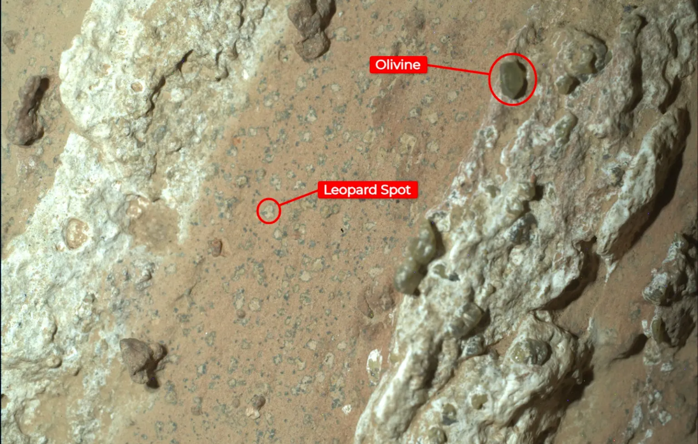
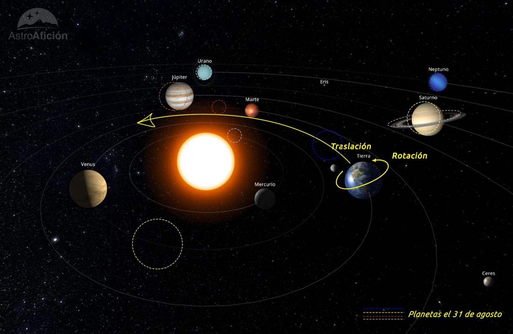

Hola de nuevo y bienvenidos a todos a las efemérides astronómicas de agosto de 2024. Ya estamos inmersos en pleno verano y queda muy poco para uno de los momentos astronómicos más típicos del año. Nos referimos por supuesto a la lluvia de meteoros de las Perseidas, que este año tendrá su máximo el 12 de agosto. La tasa de actividad de las Perseidas es algo inferior a la de las lluvias de las Gemínidas de diciembre y las Cuadrántidas de enero, pero a cambio nos ofrece unas temperaturas mucho más agradables y se trata de una época del año en a que muchas personas están de vacaciones, por lo que es sin lugar a dudas la más famosa de las tres.
Las condiciones de observación para este año son razonablemente buenas. El día del máximo La Luna estará en fase cuarto creciente, con poco más de su mitad iluminada. Su ocaso será poco después de la medianoche, lo que nos va a garantizar muchas horas de oscuridad para disfrutar.
Como todos los años en Astroafición hemos preparado varias actividades para que podáis disfrutar al máximo de las Perseidas, puedes consultarlas aquí.
Un nuevo hallazgo del rover Perseverance en Marte
La misión Perseverance de la NASA ha descubierto una roca en Marte, apodada “Cheyava Falls”, que presenta manchas similares a las de un leopardo.
Estas manchas han intrigado a los científicos, ya que podrían indicar que hace miles de millones de años, las reacciones químicas en esta roca podrían haber sostenido vida microbiana. El 21 de julio el rover encontró la roca, que contiene compuestos orgánicos y olivino, mientras exploraba el borde norte de Neretva Vallis, cercano al cráter Jezero. Este hallazgo podría proporcionar pistas sobre la habitabilidad pasada de Marte.
El equipo de Perseverance ha utilizado varios instrumentos para analizar la roca, incluyendo SHERLOC y Mastcam-Z. Los resultados preliminares sugieren que las manchas y los compuestos orgánicos podrían haber sido formados por procesos biológicos, pero los científicos recuerdan que también se pueden obtener por otro típo de mecanismos. La roca también muestra venas de sulfato de calcio y hematita, lo que sugiere que el agua fluyó a través de ella en el pasado, un requisito esencial para la vida.
Los científicos recomiendan prudencia
Aunque los hallazgos son prometedores, se necesita más investigación para confirmar si las características observadas en “Cheyava Falls” son realmente indicativas de vida pasada en Marte. El equipo de Perseverance planea continuar su análisis y eventualmente traer muestras de la roca a la Tierra para un estudio más detallado.
Por el momento los astrobiólogos catalogan este descubrimiento como nivel 1, “detección de posible signo de vida”, dentro de los 7 niveles que contempla la escala CoLD (Confianza en la detección de vida), que incluye entre otros, descartar posibles fuentes de contaminación biológica y termina con la confirmación del hallazgo por fuentes independientes a los descubridores del mismo.
 Detalle de la roca Cheyava Falls, con los puntos de interés etiquetados. Fuente: NASAVisibilidad planetaria
Iniciamos la sección con la ya habitual ilustración que muestra la evolución de los planetas del Sistema Solar a lo largo del mes de agosto.
 Evolución de los planetas del Sistema Solar en agosto de 2024